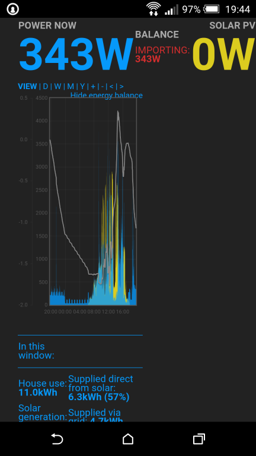
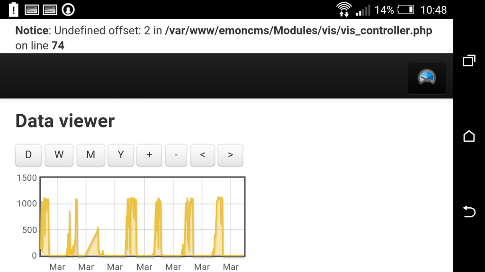
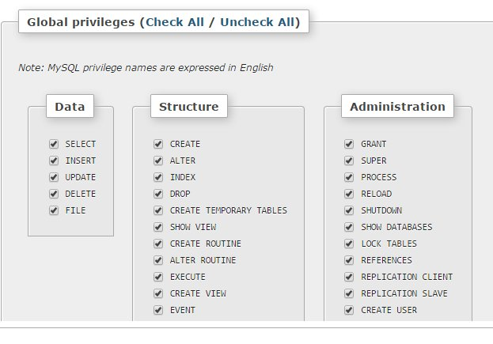

I've created another branch of emoncms for testing v8.5 of emoncms before its merged into the master branch and launched.
v8.5 contains:
- The new historical data request method (newgetdatamethod branch). Including new data viewer visualisation, quick CSV export of current view, new application specific dashboard module support as detailed here: http://openenergymonitor.org/emon/node/10297
- The the accumulator based bargraph fix as detailed here: http://openenergymonitor.org/emon/node/10373
Removed/depreciated in v8.5:
- myelectric module - replaced with the application specific dashboards module that can be downloaded here: https://github.com/emoncms/development/tree/master/Modules called app, (drag and drop into emoncms modules folder to install)
- node module - this hasnt been used or been a supported method of inserting data for some time.
- timestore, phptimestore and mysqltimeseries feed engines have been removed as explained and with initial upgrade notes here: http://openenergymonitor.org/emon/node/10380
There is also a new 'nodes' module on the way that aims for close emonhub integration, including providing a good foundation for control via rfm12/69 network. Im particularly pleased by the modules http api, it makes better use of http request methods and the api helper documentation page makes it easier to test https://github.com/emoncms/development/tree/master/Modules/nodes
A lot of these developments such as the application specific dashboards the way they load as an in browser js app, the nodes module and the new get data method are all inspired by the work exploring building emoncms from scratch in python that I've been doing called 'emonview'. By now its the php implementation that is further along again :)
Re: Testing the next version of emoncms v8.5
Works well for me, and good to see depreciated items removed - looks less cluttered now!
The only issues I can find are;
Paul
Raspberry Pi + Git install(full version) + https

Re: Testing the next version of emoncms v8.5
node module - this hasnt been used or been a supported method of inserting data for some time.
I confess I'm really not up to speed with all the various posting options, and the terminology used for each. I have a very old, crusty, but reliable embedded system posting to emoncms.org as follows:
"http://emoncms.org/input/post?node=9&csv=%d,%d,%d,%d,%d,%d,%d&apikey=apikey"
Is that interface being obsoleted, or will that be around forever? If it is being obsoleted, can someone give me some tips on how to migrate it to something more modern please?
Re: Testing the next version of emoncms v8.5
Thanks Paul, Il have a look at both the docs and the mysolar width. Maybe I can get the axes labels to appear inside rather than outside the plot.
@dBC, no need to change that yet. that is still the main request url for posting data. I was referring to a module called node.
Re: Testing the next version of emoncms v8.5
Very nice .. I am working with the emonView since a week and integration woth nodes module is great.
I hope it is possible to send the naming of emonView to emonCms too.
Re: Testing the next version of emoncms v8.5
Just noticed that I also get an 'Undefined offset' error when viewing feeds on v8.5 using a android phone as per the screenshot below.
It's only evident when viewed on phone, and no errors whilst viewing on laptop!
Paul

Re: Testing the next version of emoncms v8.5
Please do not remove MysqlTimeSeries engine.
If you'd like i can make a global disable usage setting flag for instalations that dont require it.
Main reason not to remove is data analasys out of emoncms via sql. Other concerns is reliability, etc.
Besides SQL still has much to be explored in performance and data size. Think cloud services.
Re: Testing the next version of emoncms v8.5
Thanks Chaveiro for the timezone developments for daily data, I have just merged your pull request into this testing branch for v8.5 which aims to be the next master https://github.com/emoncms/emoncms/tree/v8.5
Re: Testing the next version of emoncms v8.5
Hi Trystan, the update to v8.5 has stopped emoncms working.
All inputs/feeds have stopped updating, and it seems unable to update MSQL to 'ALTER TABLE users MODIFY `timezone` varchar(64); Default 'UTC'
When I run the update database, it reports that it has been successfully updated, but when I check for further db updates it appears again, and so on.
I've tried to add the timezone in the accounts page, but it's just a blank text box.
I'll check the emonhub log....
Paul
Re: Testing the next version of emoncms v8.5
Emonhub shows;
2015-03-27 19:56:26,785 WARNING emonCMS send failure: wanted 'ok' but got '<br /> <b>Fatal error</b>: Uncaught exception 'Exception' with message 'DateTimeZone::__construct(): Unknown or bad timezone (0)' in /var/www/emoncms/Modules/input/process_model.php:668 Stack trace: #0 /var/www/emoncms/Modules/input/process_model.php(668): DateTimeZone->__construct('0') #1 /var/www/emoncms/Modules/input/process_model.php(281): Process->getstartday(1427486163) #2 /var/www/emoncms/Modules/input/process_model.php(127): Process->power_to_kwhd('28', 1427486163, 345) #3 /var/www/emoncms/Modules/input/input_controller.php(172): Process->input(1427486163, 345, '1:1,24:0,1:27,4...') #4 /var/www/emoncms/core.php(66): input_controller() #5 /var/www/emoncms/index.php(109): controller('input') #6 {main} thrown in <b>/var/www/emoncms/Modules/input/process_model.php</b> on line <b>668</b><br />
Paul
Re: Testing the next version of emoncms v8.5
I see a ; in your pasted sentence but could not replicate on Extended. Update works fine.
Check that the database user you use in emoncms config has alter table permissions.
Or, run directly in mysql:
ALTER TABLE `users` MODIFY `timezone` VARCHAR( 64 ) DEFAULT 'UTC'
Re: Testing the next version of emoncms v8.5
A check of my emoncms mysql user shows;

...and logging into mysql and running the command directly results in;
mysql> ALTER TABLE `users` MODIFY `timezone` VARCHAR(64) DEFAULT 'UTC'; Query OK, 1 row affected (0.08 sec) Records: 1 Duplicates: 0 Warnings: 0 >...however checking phpMyAdmin, the 'timezone' column within 'users' still shows '0' and not 'UTC', although varchar is now 64 characters.
Paul
Re: Testing the next version of emoncms v8.5
Deploy manual:
To update, apply patch then:
Go to Admin -> update Database.
Go to Account -> set your nodes timezone. (do it for all users, or change in DB user table directly)
If one user has nodes from different timezones, then a new account must be created for each node timezone used.
Then all day feed accumulator (like kwh/d) past data might need an offset fix.
If you have a database engine it's easy as add/subtract the correct value to the old data. This is to fix users reporting that day starts at 8'o clock (or not mid night).
Re: Testing the next version of emoncms v8.5
That's exactly the process I carried out!
However, after editing mysql directly, I then got the option in Account > Timezone to select from the dropdown my current timezone, and emoncms kicked into life again, which I didn't have before.
From my experience tonight, there is a bug stopping the mysql update via emoncms > Admin > Update Database.
Paul
Re: Testing the next version of emoncms v8.5
I think there is syntax error in your command Paul try to end up your command with semi-colon ";" like this:
mysql> ALTER TABLE `users` MODIFY `timezone` VARCHAR( 64 ) DEFAULT 'UTC';
then press ENTER
Re: Testing the next version of emoncms v8.5
Chaviero's post omitted the ";" but if you check my post of 21:42 above I did add it.
(admittedly not the first time I tried!)
Thanks for the post.
Paul
Re: Testing the next version of emoncms v8.5
It was a bug. Fixed and awaiting merge to Extended branch on github